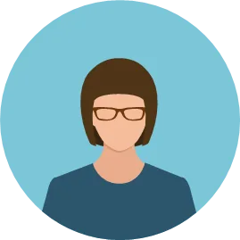
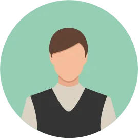
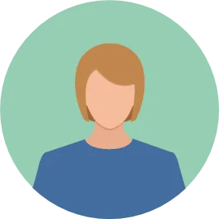
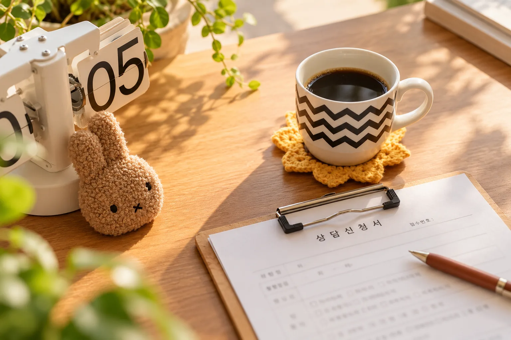
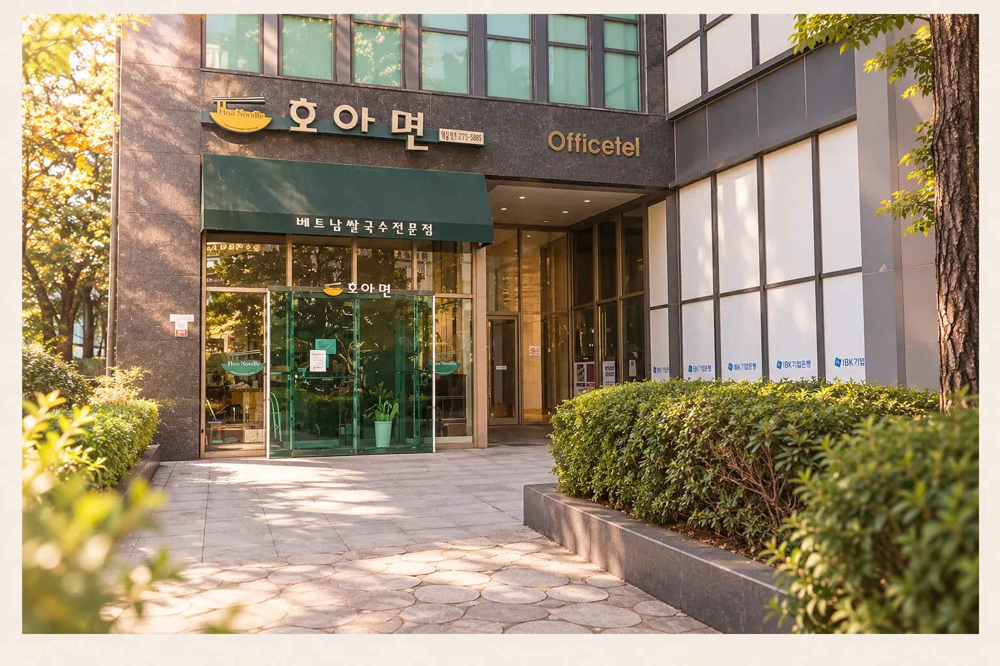
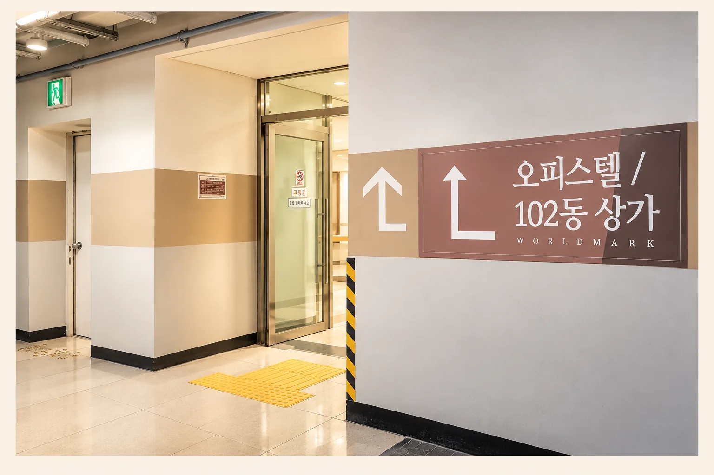
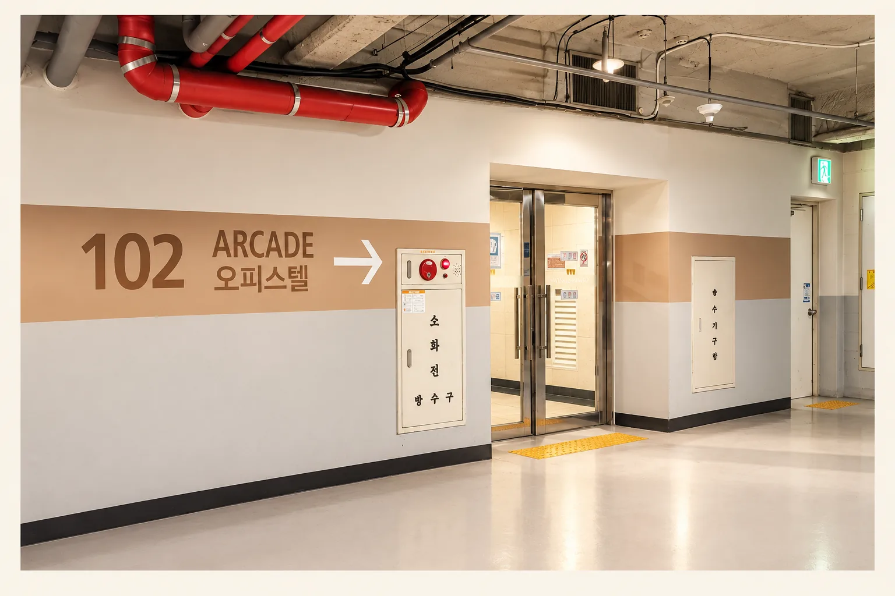
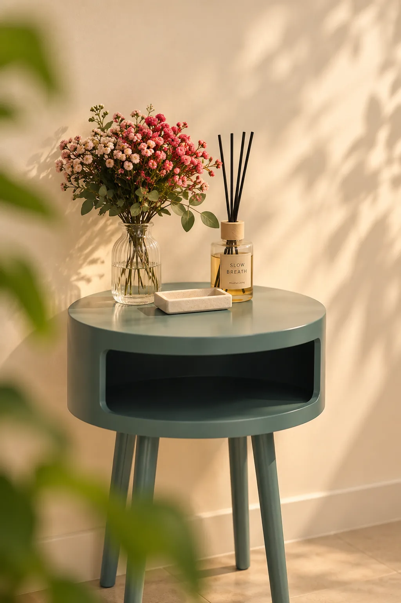

정교영 소장
상담심리사 1급 · 심리학 박사
나도 몰랐던 내 마음풍경을 함께 들여다보는 상담자
자세히 보기 →마음을 바꾸려고 애쓰기 전에, 왜 그렇게까지 애쓰고 있는지 함께 이해해 봅니다.
없애고 싶은 마음도, 반복되는 관계의 어려움도, 오랫동안 나를 괴롭혀온 생각도 지금까지 나를 지켜온 방식일 수 있습니다. 마음풍경은 판단보다 이해에서 시작합니다.
오랫동안 상담실에서 사람들의 마음을 만나왔습니다.
상담을 하며 점점 더 분명해진 것이 있습니다. 사람은 고쳐져야 하는 존재라기보다 충분히 이해받을 필요가 있는 존재라는 것입니다.
상담심리사 1급 · 심리학 박사
상담 · 교육 · 수퍼비전 경험
상담자를 선택한다는 것은 생각보다 중요한 결정입니다. 어떤 목소리로 이야기하는지, 사람의 마음을 어떻게 바라보는지 먼저 만나보셔도 좋습니다.
전공과 전문 자격을 갖춘 상담자
상담 · 교육 현장 경험
마음을 고치기보다 관계를 새롭게
수원 영통 대면 · 온라인 상담
말할 준비가 된 만큼, 나에게 맞는 속도로 시작합니다.
모든 과거를 한꺼번에 이야기할 필요는 없습니다. 지금 가장 힘든 부분과 현재의 삶에서 시작합니다.
불안, 분노, 자기비난처럼 힘든 마음도 이유 없이 생기지 않았다고 보고 그 마음이 무엇을 지키려 했는지 함께 살펴봅니다.
상담자에게 의존하기보다 상담이 끝난 뒤에도 스스로 자신의 마음을 알아차리고 돌볼 수 있는 힘을 키워갑니다.
상담의 과정과 변화의 속도는 사람마다 다릅니다.
실제 네이버 플레이스에 남겨주신 방문자 후기 중 일부입니다.

힘든 일을 편하게 털어놓을 수 있는 안전한 선생님이 있다는 게 큰 힘이 되었습니다.

꾸준히 내 마음을 알아차리고 알아주는 작업을 반복하다 보니 마음이 한결 편안해지고 갈등도 줄었습니다.

내 안의 소리에 귀를 기울이는 경험은 제 자신에게 집중해보는 가치 있는 시간이었습니다.
문제가 아주 심각해야만 상담을 받을 수 있는 것은 아닙니다. 같은 어려움이 반복되고 혼자 오래 애써도 달라지지 않는다면 함께 살펴볼 수 있습니다.
첫 상담에서는 현재 가장 힘든 부분과 상담을 통해 도움받고 싶은 것을 함께 살펴봅니다.
현재의 어려움을 간단히 남겨주세요.
가능한 일정과 상담자를 안내합니다.
지금 가장 필요한 이야기를 함께 살펴봅니다.
이후 상담 여부와 방향을 함께 결정합니다.
홈페이지에서 보신 공간 그대로, 실제 상담이 이루어지는 마음풍경의 공간입니다. 처음 방문하는 순간부터 상담을 마치고 돌아가는 시간까지, 조금은 편안하게 머물 수 있기를 바랐습니다.

어디서부터 말해야 할지 모르겠다는 마음부터 시작해도 괜찮습니다.
수 · 목 · 금 · 토
월 · 목
화 · 수 · 금
모든 상담은 예약제로 운영됩니다.
심리상담은 한두 번의 만남만으로 충분한 변화를 기대하기 어려울 수 있습니다. 상담 목표와 상황에 따라 적절한 기간을 상담자와 함께 논의합니다.
건물에 도착하시면 사진의 1층 오피스텔 출입구로 들어오세요. 엘리베이터를 이용해 8층 804호로 오시면 됩니다.

1F · 오피스텔 출입구B1 또는 B2에 주차하신 뒤 사진과 같은 102동 오피스텔 출입구를 이용해 주세요. 엘리베이터를 타고 8층 804호로 오시면 됩니다.

B1
B2
상담을 시작해야 할 만큼 힘든지 먼저 판단하고 오실 필요는 없습니다. 함께 이야기하면서 무엇이 필요한지 살펴볼 수 있습니다.
상담 가능 일정 확인